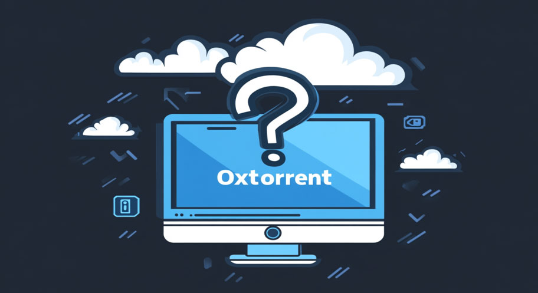

Oxtorrent est un site populaire pour télécharger des torrents rapidement et en toute sécurité. Si vous cherchez des films, des séries, des jeux vidéo ou même des logiciels, Oxtorrent offre une vaste bibliothèque de torrents gratuits de haute qualité. Avec une interface simple et des téléchargements rapides, Oxtorrent est la destination idéale pour tous vos besoins en matière de contenu numérique.

Pourquoi Choisir Oxtorrent pour vos Téléchargements ?
- Large Sélection : Oxtorrent propose une vaste gamme de torrents, incluant des films récents, des séries télévisées populaires, des jeux vidéo et des logiciels.
- Téléchargement Rapide : Grâce à un réseau de seeders fiables, les téléchargements sur Oxtorrent sont rapides et efficaces.
- Interface Simple : Le site est conçu pour être facile à naviguer, vous permettant de trouver rapidement les torrents que vous cherchez.
- Gratuit et Sans Inscription : Vous pouvez télécharger des torrents sans frais ni obligation de vous inscrire, ce qui rend l'accès encore plus simple et rapide.
- Mise à Jour Quotidienne : Oxtorrent est constamment mis à jour avec de nouveaux torrents, vous garantissant de toujours trouver les derniers films et séries.
Comment Télécharger sur Oxtorrent ?
Le téléchargement sur Oxtorrent est rapide et facile. Voici comment procéder :
- Accédez au Site : Ouvrez votre navigateur et allez sur le site d'Oxtorrent.
- Recherchez Votre Torrent : Utilisez la barre de recherche ou parcourez les différentes catégories pour trouver ce que vous souhaitez télécharger.
- Téléchargez le Torrent : Une fois le fichier trouvé, cliquez sur le lien de téléchargement pour obtenir le fichier .torrent.
- Ouvrez avec un Client Torrent : Utilisez un client comme uTorrent ou BitTorrent pour commencer le téléchargement.
Oxtorrent est-il Sécurisé ?
Bien qu'Oxtorrent soit un site fiable pour le téléchargement de torrents, il est toujours conseillé de prendre des précautions. Les utilisateurs devraient utiliser un VPN et un logiciel antivirus pour garantir la sécurité des fichiers téléchargés. De plus, certaines publicités sur le site peuvent être trompeuses, il est donc important de naviguer prudemment.
FAQ - Questions Fréquemment Posées
1. Oxtorrent est-il légal ?
Le téléchargement de torrents via Oxtorrent peut être dans une zone grise juridique, car il propose du contenu sous copyright. Assurez-vous de respecter les lois locales sur les droits d'auteur.
2. Comment savoir si un torrent est fiable ?
Vérifiez toujours le nombre de seeders et les commentaires des utilisateurs pour évaluer la fiabilité d'un torrent. Un nombre élevé de seeders est un bon indicateur de la qualité du torrent.
3. Dois-je m'inscrire pour télécharger des torrents sur Oxtorrent ?
Non, vous n'avez pas besoin de créer un compte pour télécharger des torrents sur Oxtorrent. L'accès aux torrents est entièrement gratuit et sans inscription.
4. Pourquoi Oxtorrent ne fonctionne-t-il pas dans certains pays ?
Oxtorrent peut être bloqué dans certains pays à cause de la légalité des torrents. Si vous avez des difficultés d'accès, l'utilisation d'un VPN peut vous permettre de contourner ces restrictions.
5. Puis-je télécharger des fichiers lourds sur Oxtorrent ?
Oui, Oxtorrent offre des torrents de grande taille, y compris des films en haute définition et des jeux vidéo volumineux. Assurez-vous d'avoir une connexion internet stable pour ces téléchargements.
Sites Similaires à Oxtorrent
Si vous êtes à la recherche d'alternatives à Oxtorrent, voici quelques sites populaires que vous pouvez essayer :
- 1337x : Un autre site de torrents fiable avec une large gamme de contenu. Il est très apprécié pour sa sécurité et ses mises à jour régulières.
- RARBG : Connu pour la qualité de ses torrents, RARBG propose une bibliothèque variée et bien structurée.
- YTS : Idéal pour les films, YTS propose des torrents de haute qualité avec des tailles de fichiers optimisées.
- The Pirate Bay : L'un des sites de torrents les plus anciens et les plus populaires, bien qu'il soit parfois inaccessible dans certains pays.
- LimeTorrents : Un site alternatif pour les téléchargements de torrents avec une grande variété de fichiers à télécharger gratuitement.
Conclusion
Oxtorrent est une excellente option pour télécharger des torrents gratuitement et rapidement. Avec une large sélection de contenu, des téléchargements de qualité et une interface conviviale, Oxtorrent est idéal pour ceux qui cherchent à accéder à des fichiers torrents facilement. N'oubliez pas de protéger vos données et de vérifier la légalité des torrents que vous téléchargez.